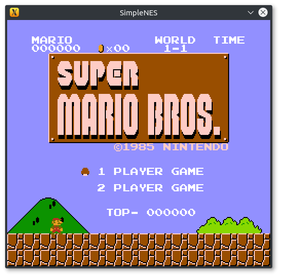
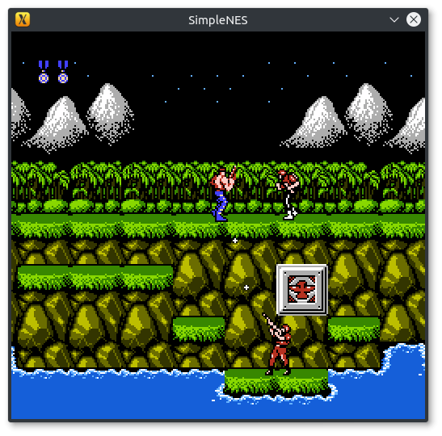
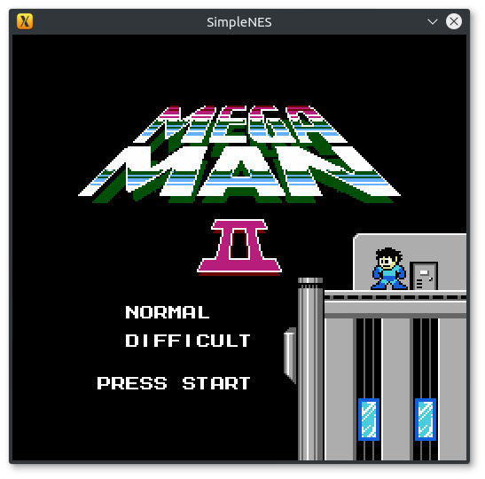
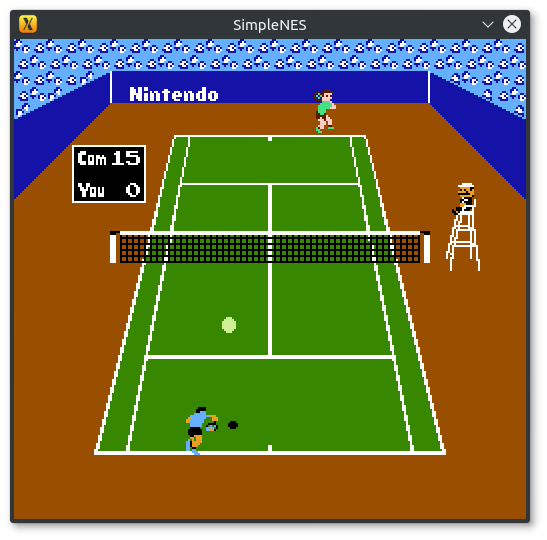
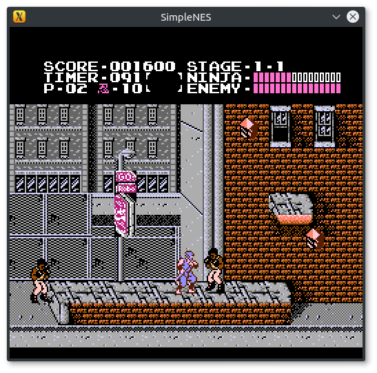

SimpleNES
View on GitHub
SimpleNES is an NES emulator hacked together for nothing but fun.Programmed with C++11 and the SFML library for graphics.
Roughly 40-50% of games should work (ie. games that use either no mapper or mappers 1, 2 or 3)..
Examples of games that have been tested to run (but NOT limited to):
(USA/Japan or World versions only i.e. NTSC compatible)
- Super Mario Bros.
- Contra
- Adventure Island
- Ninja Gaiden
- Wrecking Crew
- Megaman and Megaman 2
- Mario Bros.
- Donky Kong and Donkey Kong Jr.
- Battle City
- Paperboy
- Legend of Zelda
- Pacman
- Tennis
- Excitebike
(Unlike the list above, these aren't tested. Some may or may not work)
Screenshots





Download
ROMs available here for testing.
Videos
Here's a playlist of SimpleNES in action!Compiling
You need : Compiling is straight forward with cmake, just run cmake on the project directory with CMAKE_BUILD_TYPE=Release or set it through the GUI and you'll get Makefile or equivalent for your platform, with which you can compile the emulator.On any Linux distribution or macOS, these are the typical steps :
$ git clone https://github.com/amhndu/SimpleNES $ cd SimpleNES $ mkdir build/ cd build/ $ cmake -DCMAKE_BUILD_TYPE=Release .. $ make -j4 #Replace 4 with however many cores you have to spare
Running
Just pass the path to a .nes image like$ ./SimpleNES ~/Games/SuperMarioBros.nesTo set size of the window,
$ ./SimpleNES -w 600 ~/Games/Contra.nesFor supported command line options, try
$ ./SimpleNES -h
Controller
Keybindings can be configured with keybindings.conf.Default keybindings:
Player 1:
| Button | Mapped to |
|---|---|
| Start | Return/Enter |
| Select | Right Shift |
| A | J |
| B | K |
| Up | W |
| Down | S |
| Left | A |
| Right | D |
Player 2:
| Button | Mapped to |
|---|---|
| Start | Numpad9 |
| Select | Numpad8 |
| A | Numpad5 |
| B | Numpad6 |
| Up | Up |
| Down | Down |
| Left | Left |
| Right | Right |
License
This code is in public domain until an Open Source License is picked.NES ROMs are subject to the respective studio's terms.